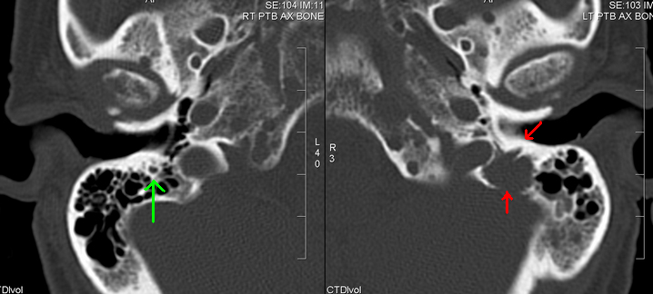

Ficha del catálogo
Mieloma múltiple
- Sistema
- Óseo
- Modalidad
- TC
- Región
- Esqueleto axial y cráneo
- Dificultad
- Avanzado
Neoplasia de células plasmáticas que produce lesiones osteolíticas por activación de los osteoclastos y supresión de los osteoblastos. Cursa con dolor óseo, anemia, insuficiencia renal e hipercalcemia. En imagen destaca porque las lesiones no generan respuesta esclerótica, a diferencia de la mayoría de las metástasis.
Técnica
Tomografía de cuerpo entero de baja dosis sin contraste con reconstrucciones óseas, que ha sustituido a la antigua serie ósea radiográfica.
Qué observar
- Lesiones líticas redondeadas en sacabocados sin borde esclerótico
- Múltiples focos en cráneo, columna, costillas, pelvis y húmeros
- Osteopenia difusa como forma de presentación en algunos pacientes
- Fracturas vertebrales por compresión en un esqueleto desmineralizado
- Ausencia de reacción perióstica pese a la destrucción ósea
- Masas de partes blandas paravertebrales en los plasmocitomas
Hallazgos
Múltiples lesiones líticas de bordes netos sin esclerosis, osteopenia generalizada y fracturas patológicas de predominio vertebral.
Perlas
La gammagrafía ósea puede ser negativa porque las lesiones son puramente líticas y no estimulan actividad osteoblástica. Por eso el estudio recomendado es la tomografía de baja dosis o la resonancia, no la gammagrafía.
Diagnóstico diferencial
- Metástasis líticas
- Suelen tener bordes más irregulares y con frecuencia coexisten focos blásticos.
- Hiperparatiroidismo
- Resorción subperióstica de falanges y tumores pardos.
- Osteoporosis simple
- No hay lesiones focales líticas definidas.
Simuladores
- Agujeros vasculares del cráneo
- Granulaciones aracnoideas
- Lagunas venosas craneales
Por modalidad
- TC
- Detecta lesiones líticas pequeñas y valora el riesgo de fractura
- RM
- Muestra infiltración medular difusa y compresión medular
- RX
- Menor sensibilidad, hoy relegada
Protocolo
Tomografía de cuerpo entero de baja dosis sin contraste. Resonancia de columna completa si hay dolor axial o sospecha de compresión.
Clasificación
Se distingue el plasmocitoma solitario del mieloma múltiple, y la presencia de lesiones óseas define enfermedad activa que requiere tratamiento.
Errores frecuentes
- Descartar mieloma por gammagrafía ósea negativa
- Confundir estructuras vasculares craneales normales con lesiones líticas
- Administrar contraste yodado sin valorar la función renal del paciente

mieloma lesiones liticas sacabocados craneo plasmocitoma osteopenia hipercalcemia